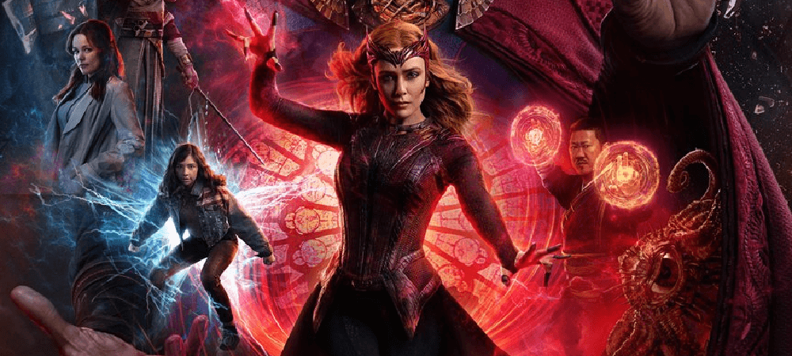

Sinopse do Filme
No filme "Doutor Estranho no Multiverso da Loucura", o Doutor Estranho se vê envolvido em uma crise interdimensional, enquanto tenta proteger o multiverso de uma ameaça crescente. A Feiticeira Escarlate, Wanda Maximoff, em busca de sua família, também se torna uma ameaça perigosa. Juntos, eles terão que enfrentar desafios jamais vistos, enquanto o destino do multiverso está em jogo.
